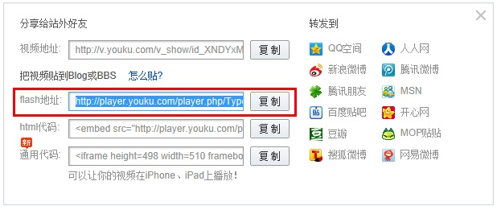

用户请先将您的视频上传到优酷、土豆 或 酷6网 等第三方视频网站后，将其'Flash地址'或称作'视频地址'(即以'http://'开头.swf'结尾 的网址）复制至本程序的Flash地址对应的文本框内即可。 |
| 以优酷为例： |
1.首先打开视频播放页面,点击红色圈中处（更多）。 |
2.在弹出的下拉菜单里，选中Flash地址或点击“复制”按钮允许复制。  |
3.将视频地址黏贴到本系统的Flash地址中即可。
说明：请确保视频地址的可用，本程序播放视频窗口的默认大小为宽：480px,高：400px,可根据需要修改。 |